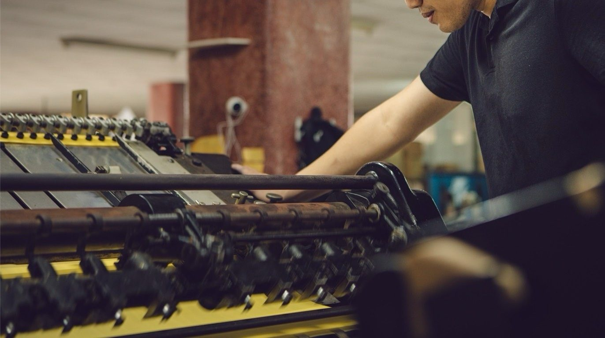

為什麼南部同業把後加工交給喜成
- 設備到位 — 海德堡菊全開自動輪轉燙金機＋海德堡菊全開自動輪轉割型機。自動輪轉機的速度與穩定度，跟手動平壓機是兩個世界。
- 燙、軋同廠 — 燙金完直接進軋型，不用在兩家廠之間運來運去，省運費、省時間、少一次碰撞風險。
- 地利之便 — 工廠在高雄阿蓮，緊鄰台南，台南／高雄的貨當天往返可行。
- 同業分際 — 代工就是代工：不接觸你的終端客戶、不外流檔案。你的客戶永遠是你的。


代工服務項目
| 項目 | 說明 |
|---|---|
| 燙金・烙印 | 各色箔燙印、素燙烙印，可指定箔號；多色分道對位 |
| 打凸・打凹 | 公母模壓紋，可與燙金對位疊加 |
| 軋型・模切 | 異形、鏤空、壓折線；貼紙半斬（花刀） |
| 直線裁切 | 大型裁紙機，最大 100 × 180 cm |
| 成型加工 | 糊袋、穿繩提把、導圓角 |
| 包裝出貨 | 熱收縮膜打包（單邊 33 cm 內），可代出貨 |
機台規格一覽
| 項目 | 燙金 | 軋型（割型） |
|---|---|---|
| 最大紙張尺寸 | 64 × 90 cm | 64 × 90 cm |
| 最大施作面積 | 64 × 80 cm | 64 × 80 cm |
| 紙張厚度 | 50 磅 ～ 500 磅 | |
| 機台 | 海德堡菊全開自動輪轉燙金機 | 海德堡菊全開自動輪轉割型機 |
超過菊全開的特大件，喜成也能協助安排，直接來電討論。
來料代工流程
- 報規格 — LINE 或電話告知：品項、紙材磅數、尺寸、數量、工藝（燙幾色／軋型形狀）。
- 估價 — 快速回覆代工價；常態往來的同業可索取自助報價工具，自己隨時算。
- 來料 — 印好的半成品連同版材資訊送到阿蓮廠（或約好貨運）。
- 首件確認 — 上機首件拍照或留樣確認，位置、壓力、箔色沒問題才跑量。
- 量產交件 — 完工檢品、包裝，自取或代安排貨運。
放損提醒：來料請依工藝預留放損張數（調機對位需要耗損），數量抓多少，估價時我們會一併告訴你。
常見問題
急件可以配合嗎？
先來電（0986-990-812）講清楚交期，喜成自有工廠、排程自己掌握，能配合的一定配合，不能硬接的也會老實說。
量少的代工單也接嗎？
接。小量有基本工繳，但不會因為量少就被拒門外。長期配合的同業，零星小單更是照顧。
代工價格怎麼算？
燙金看色數、面積與數量；打凸看道數與數量（一般圖案不隨面積跳價）；軋型看刀模與張數。加 LINE 索取同業專用的自助報價工具，輸入規格即時出價。